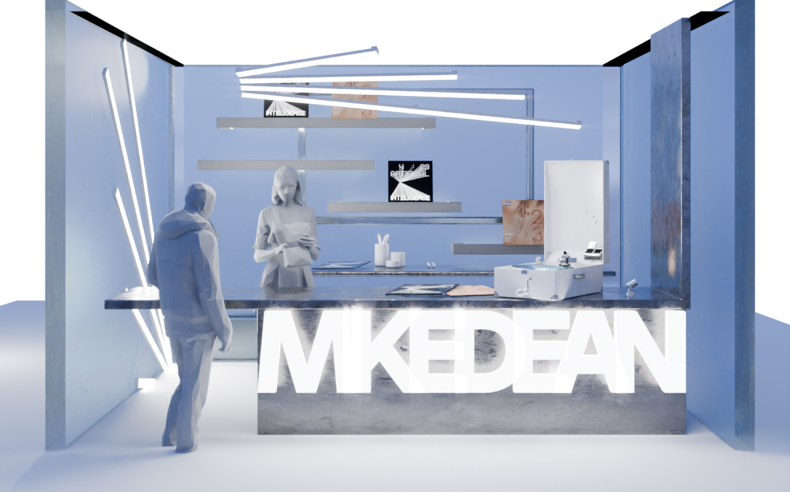
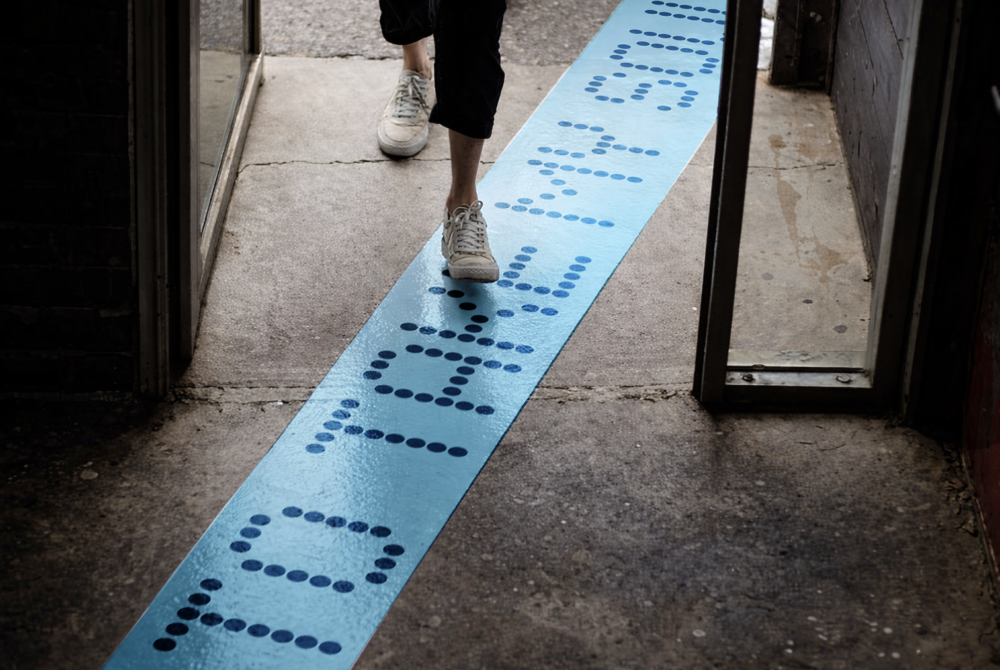
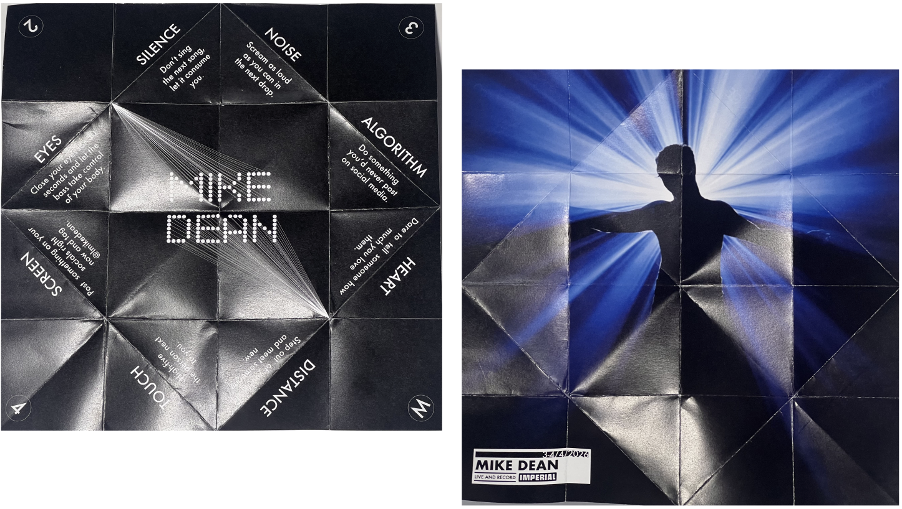
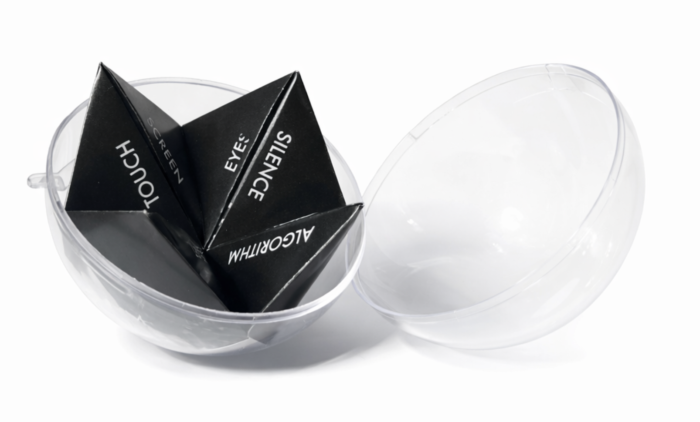
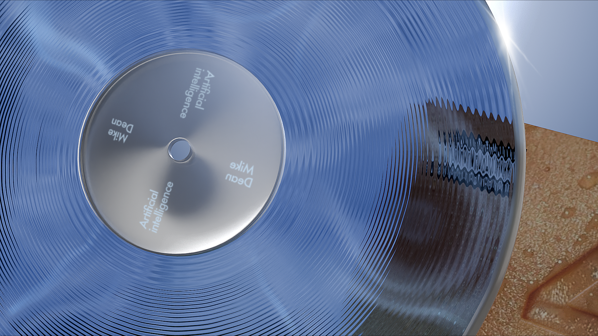
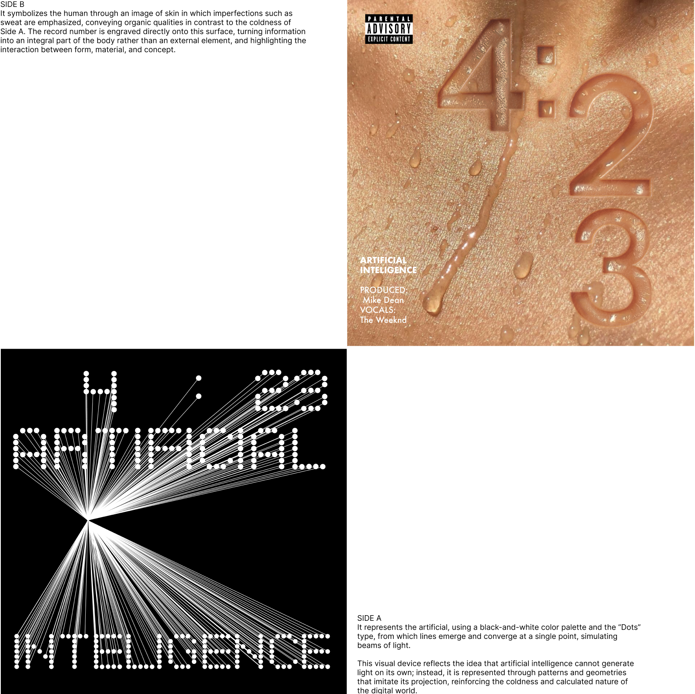
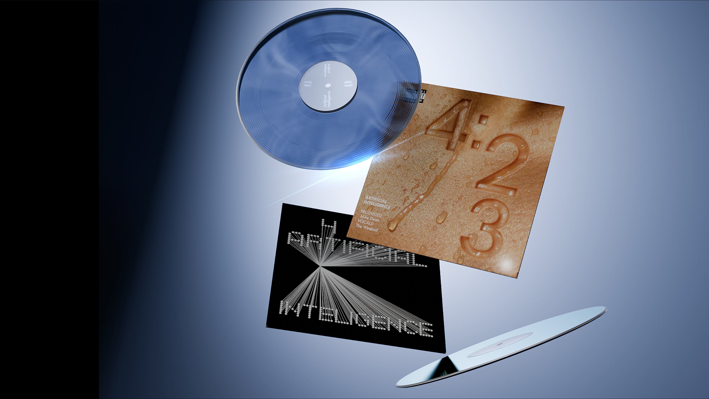

4:23
2026
Vinyl Packaging & Art Direction
Packaging Design / 3D Visuals / Typography / Art Direction
Physical edition and visual ecosystem for a musical release.
Role: Art Director & Graphic Designer.
OVERVIEW
4:23 is a vinyl design project inspired by Artificial Intelligence, a track from Mike Dean's album 4:23. The project explores the relationship between technology and human creativity, questioning whether artificial intelligence can truly replicate the emotion and soul behind human-made art.
THE IDEA
We wanted to translate the contrast between the artificial and the human into a physical object. We approached the two sides of the record as opposing worlds, each with its own visual language.
Side A represents the artificial through a cold black-and-white palette, geometric typography and lines that converge like beams of light. Side B represents humanity through an intimate photograph of skin, highlighting natural textures and imperfections.
BRINGING THE CONCEPT TO LIFE
I wanted the vinyl itself to represent the human soul, something intangible and hidden within the body. That's why we placed it inside the packaging, almost as if the sleeve were protecting something alive.
I modelled the vinyl in Blender, experimenting with materials, transparency and lighting to achieve a translucent blue finish. As light passes through the surface, it creates soft, wave-like reflections, giving the object an almost ethereal quality.
FINAL RESULT
The final design brings together graphic design, photography and 3D modelling to create a visual dialogue between technology and humanity.
What I especially like about this project is how the concept exists beyond the printed artwork. The contrast between the two sides, the materials and even the placement of the vinyl all contribute to the same story. I wanted the design to feel like an extension of the music, rather than simply its packaging.






